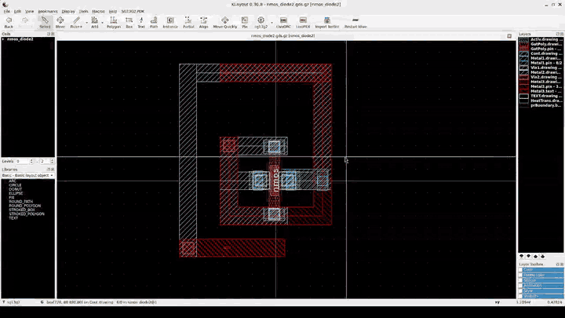
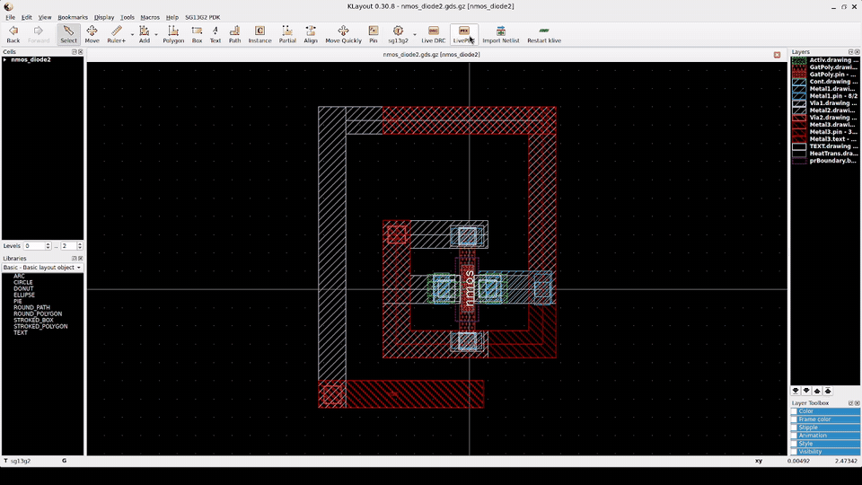
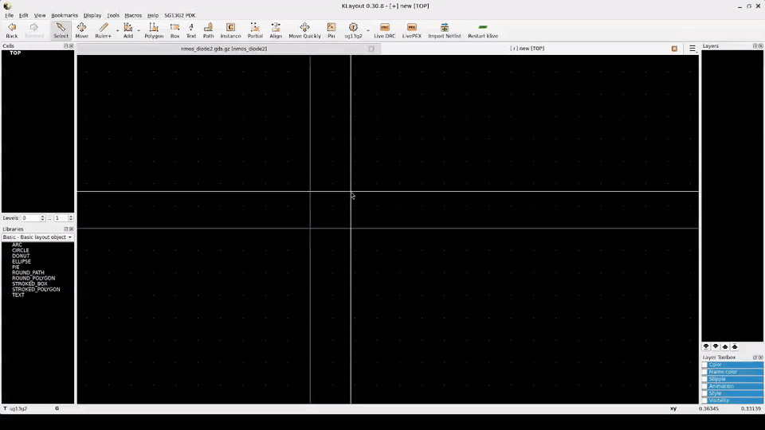
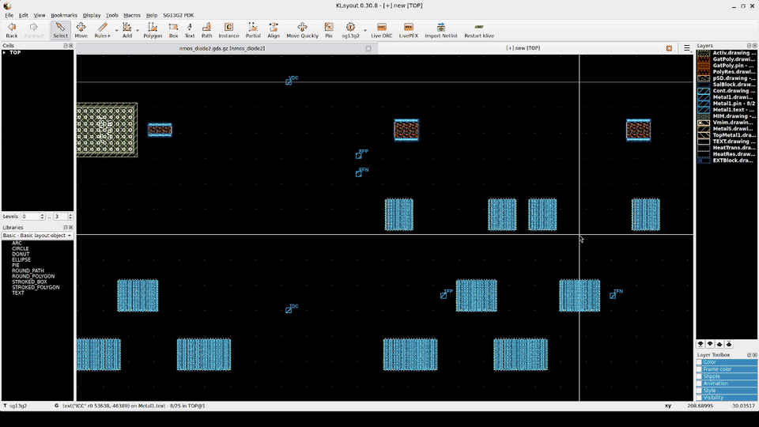

klayout-NAT adds four layout tools to KLayout. Three of them are toolbar buttons; the fourth, Ratsnest, works automatically when you select an imported device. LivePEX works with the IHP SG13G2 and the sky130A PDKs; the other tools are for IHP SG13G2.
klayout-NAT was made to run inside the IIC-OSIC-TOOLS container, which already provides KLayout, the IHP SG13G2 PDK, Magic, xschem and klayout-pex. Outside the container it works if the same tools are installed and the environment variables below point to them.
| Tool | Toolbar button | What it does |
|---|---|---|
| LiveDRC | LiveDRC | Runs the PDK DRC every time the layout is saved and loads the result into the Marker Browser. |
| LivePEX | LivePEX | Runs a Magic parasitic extraction (CC, RC or R) of the current layout and shows the extracted netlist. |
| Import Netlist | Import Netlist | Places an xschem SPICE netlist as SG13G2 PCells, optionally at the schematic positions, and updates w/l of placed devices from a new netlist. |
| Ratsnest | (none) | Draws lines from the selected device or pin to every device and pin that shares a net with it. |
sg13g2 technology).run_drc.py and a python3 on the PATH..magicrc and the klayout-pex Python package
(tested with version 0.3.12) available to KLayout's Python.klayout -e or set
File > Setup > Application > Editing Mode). The device names and nets are stored as
user properties, and KLayout only allows that in editing mode.
All of this is already installed in IIC-OSIC-TOOLS, the environment klayout-NAT was made for. There the
PDK paths (/foss/pdks/...) are found without any setup.
PluginNat folder into the salt folder of your
KLayout home (~/.klayout/salt/ on Linux; /headless/.klayout/salt/ in
IIC-OSIC-TOOLS) and restart KLayout.After a restart the buttons LiveDRC, LivePEX and Import Netlist appear at the end of the toolbar. Messages from all tools are printed to the macro console (Macros > Macro Development, or F5).

run_drc.py and asks for the DRC mode,
deep (default) or flat. The button turns green and shows [ON][d] or
[ON][f].[RUNNING...].Saves made while a DRC is running are ignored.
run_drc.py is looked for$PDKPATH/libs.tech/klayout/tech/drc/run_drc.pydrc/run_drc.py or tech/drc/run_drc.py under each folder in $KLAYOUT_PATH/foss/pdks/ihp-sg13g2/libs.tech/klayout/tech/drc/run_drc.py
The plugin reads the same options file as the PDK's DRC menu,
~/.ihp_pdk/ihp_sg13g2_drc_options.yml. The run mode always comes from the dialog. Without the
file these defaults are used:
| Option | Default | Meaning |
|---|---|---|
top_cell | (current cell) | Cell to check. |
run_dir | drc_run_<topcell> next to the layout |
Output folder. It is deleted and recreated on every run. |
parallel_runs | 1 | Passed as --mp. |
density_thr | 1 | Passed as --density_thr. |
table | all | Rule table; anything other than all is passed as --table. |
no_density | true | Density checks are off unless you set this to false. |
no_feol, no_beol, disable_extra_rules, density_only,
density_sanity, antenna, antenna_only, no_offgrid,
no_angle, no_recommended |
false | Passed to run_drc.py as --<flag> when true. |
If several reports are produced, the *_full.lyrdb one is loaded.

LivePEX works with IHP SG13G2 and sky130A. The PDK is taken from the PDK environment
variable; select the PDK before starting KLayout (in IIC-OSIC-TOOLS: sak-pdk sky130A or
sak-pdk ihp-sg13g2).
Everything goes to pex_magic_<topcell> next to the layout:
<topcell>.pex.spice: the extracted netlist;<topcell>_magic_script.tcl: the Magic script that was run;<topcell>_magic_output.txt: the Magic log.| Variable | Use |
|---|---|
KPEX_MAGICRC | Path to the .magicrc. Checked first. |
PDK_ROOT, PDK |
Used to find $PDK_ROOT/$PDK/libs.tech/magic/$PDK.magicrc. Without them,
/foss/pdks/ihp-sg13g2/libs.tech/magic/ihp-sg13g2.magicrc and then
/foss/pdks/sky130A/libs.tech/magic/sky130A.magicrc are tried. |
KPEX_MAGIC_EXE | Magic executable. Default: magic. |
The 2.5D (klayout-pex) and FasterCap engines are present in the code but turned off, because the
klayout-pex version in the container does not include them.

Only for the IHP SG13G2 PDK. Open or create a layout with the sg13g2 technology first, with
KLayout in editing mode. Then click Import Netlist and choose one of two options.
.sch). With it, the devices and
pins are moved to the same relative positions they have in the schematic.What the import creates:
XM1, XC2, ...)
that contains the PCell. Open the cell one level down to edit the PCell parameters. With
m>1 the copies are named XM1_1, XM1_2, ...*.ipin, *.opin and *.iopin
become 1 µm squares on Metal1 (8/0 and 8/2) with a label on 8/25, in a row 10 µm below
the devices.| Key | On | Value |
|---|---|---|
| 1 | devices and pins | SPICE instance name or pin name |
| 2 | devices | nets of the device terminals, in SPICE order, separated by spaces |
| 3 | pins | ipin, opin or iopin |
Placement from the schematic:
Use it after changing device sizes in the schematic. Choose the new SPICE netlist. The plugin matches
the layout devices to the netlist by name, lists every device whose w or l changed
and, after Apply changes, updates those PCells. The whole update is one step that Ctrl+Z undoes.
Devices that exist only in the layout or only in the netlist are not created or deleted; they are listed in
the console.
The PCell templates in pymacros/ihp130_pcell_templates.py cover the SG13G2 LV/HV MOS and RF MOS,
npn13G2/npn13G2L/npn13G2V and pnpMPA bipolars, cmim and rfcmim capacitors, rsil/rppd/rhigh resistors, antenna
and Schottky diodes, SVaricap, ESD devices, ntap1/ptap1, isolbox and bondpad. Lines that match no template
are treated as subcircuit instances.

Select an imported device (its cell or the PCell inside it) or a pin. Lines are drawn from it to every device and pin that shares a net with it. They follow the selection when it is moved and disappear when nothing is selected. Nothing needs to be turned on.
GND and sub! are ignored, because they connect almost everything. Edit
IGNORED_NETS in pymacros/ratsnest.py to change this.| Path | Contents |
|---|---|
grain.xml | Package description for the KLayout package manager. |
pymacros/autorun.lym | Runs at startup and registers all tools. |
pymacros/live_drc.py | LiveDRC. |
pymacros/live_pex.py | LivePEX panel. |
pymacros/import_netlist.py | Import Netlist window, importer and update. |
pymacros/ihp130_pcell_templates.py | SPICE to PCell templates for SG13G2. |
pymacros/ratsnest.py | Ratsnest. |
pymacros/debug_test.lym | Diagnostic macro (Tools menu) that prints the plugin state. |
icons/ | Toolbar icons. |
doc/ | This page and the demo animations. |
klayout-NAT is licensed under the GNU General Public License v3.0 or later. import_netlist.py and
ihp130_pcell_templates.py are based on the netlist importer of the IHP Open PDK
(Apache License 2.0, originally by Efabless Corporation); their original notices are kept in the files.
LivePEX uses klayout-pex (GPL-3.0-or-later) and Magic.
This toolkit is my undergraduate final project (Trabalho de Conclusão de Curso) in Electronic Engineering at the Universidade de São Paulo (USP).
Thanks to the LSI, Laboratório de Sistemas Integráveis of the Escola Politécnica da USP, for the support.
Author: Flavio Midea.